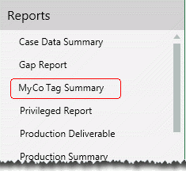
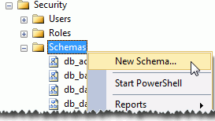
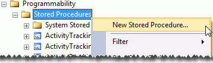

CAUTION! Only administrators with a strong understanding of SQL and experience working with SQL stored procedures should perform the following procedure. Administrators without this background may unintentionally corrupt the Eclipse case database.
Administrators who are proficient in SQL and have appropriate permissions for the Eclipse database can create custom reports in SQL that will be listed in the Eclipse Reports menu. In the following example, the company “MyCo” has added a custom report on tags:

Notes regarding custom reports:
Custom reports are created using SQL stored procedures (SPROCs).
Custom reports are based on any data stored in the case database in SQL.
Custom reports must run automatically when they are selected—they cannot request any user input (for example, a date range).
Custom reports are included alphabetically in the Eclipse Reports menu.
Custom reports appear only in Eclipse Web, not in Eclipse Administration.
The ability for users to see/run custom reports is governed by same permission as standard reports (by the User Interface Access > Reports permission).
|
|
CAUTION! Only administrators with a strong understanding of SQL and experience working with SQL stored procedures should perform the following procedure. Administrators without this background may unintentionally corrupt the Eclipse case database. |
The following procedure does not include specific SQL steps. If you do require assistance in adding the custom report to Eclipse, please contact IPRO Support for assistance.
To add a custom report:
Preparation:
Identify the details to be included in the report. Any case data (fields, etc.) can be included.
Determine a name for the report. It is highly recommended that names for custom reports begin with your company’s name or follow some other convention that allows them to be easily distinguished from standard reports.
Determine a unique report ID; all custom report IDs should be numbered 2000 or higher to avoid conflicts with standard reports.
In the SQL Server Management Studio’s Object Explorer, locate the Eclipse case database.
Create a “UserDefinedReports” schema for the Eclipse database.

Create a new stored procedure defining the needed report. The stored procedure name must match the report name.

After the stored procedure has been created, references to it must be added to the FieldDisplayReports and FieldDisplays tables in the Eclipse case database. See the following examples.
Example 1: Adding to the FieldDisplayReports table
IF NOT EXISTS(SELECT * FROM dbo.FieldDisplayReports WHERE ReportID = 2000) INSERT INTO dbo.FieldDisplayReports (ReportID, ReportName) VALUES(2000, ‘MyReport’)
where
|
2000 = |
The report ID as defined in your stored procedure. Review the guidelines in step 1 if needed. |
|
MyReport = |
The name of the report as defined in your stored procedure. Review the guidelines in step 1 if needed. |
Example 2: Adding to the FieldDisplays table
INSERT INTO dbo.FieldDisplays (DisplayName,DisplayTypeId,
UserKey,DisplayOrder,GroupByFieldId,SortByFieldId,
ReportId,CreatedByKey,CreatedDate,ModifiedByKey,
ModifiedDate)SELECT reportname,5,0,ROW_NUMBER()
OVER(ORDER BY ReportName ASC),0,0,r.ReportId,0,GETDATE(),0,GETDATE()FROM dbo.FieldDisplayReports r LEFT OUTER JOIN dbo.FieldDisplays d ON d.ReportId = r.ReportId WHERE d.DisplayId IS NULL
After all stored procedure tasks are complete in the SQL Server Management Studio, inform reviewers about the new report and its purpose.
If reviewers are working in the case for which the report was created, they must re-open the case in order to see/run the new report.